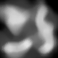

Height Map Generated from a .RAW image version of the following:
Adapted from chapter 5 of Beginning OpenGL Game Programming
Instead of bothering with asynchronous loading, I converted the .RAW image file to a byte array and stored it in ./heightMap.raw.js
TODO is normal generation - colors are currently set based on height value